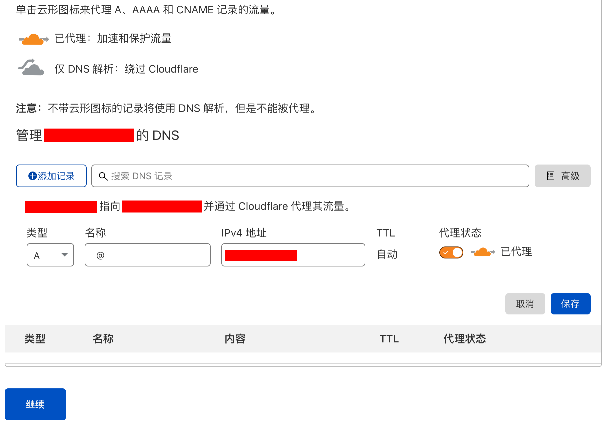
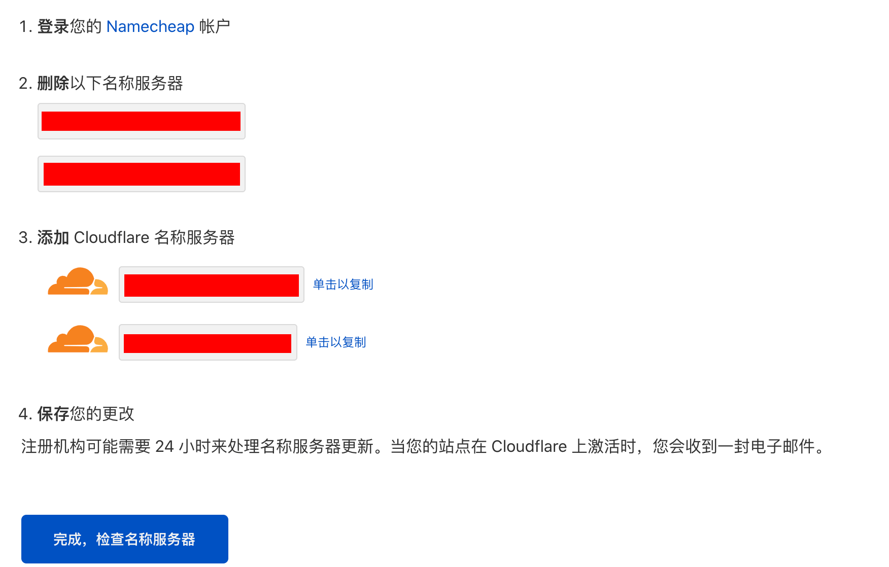
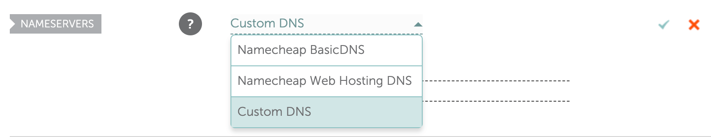
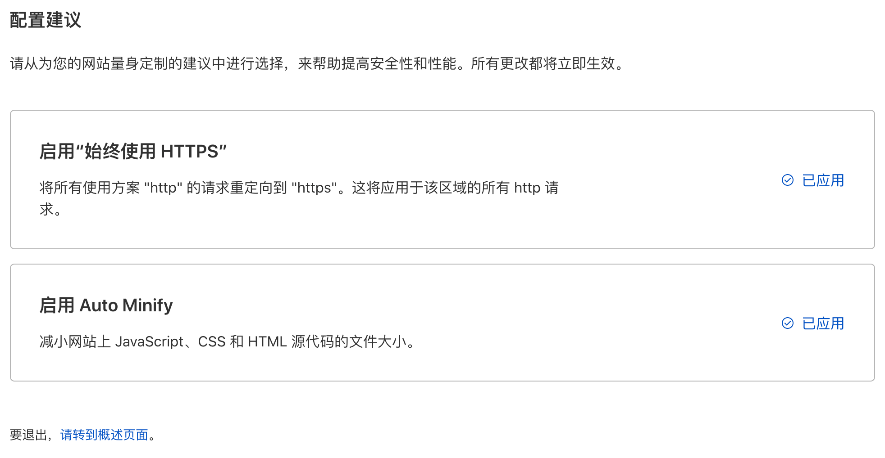
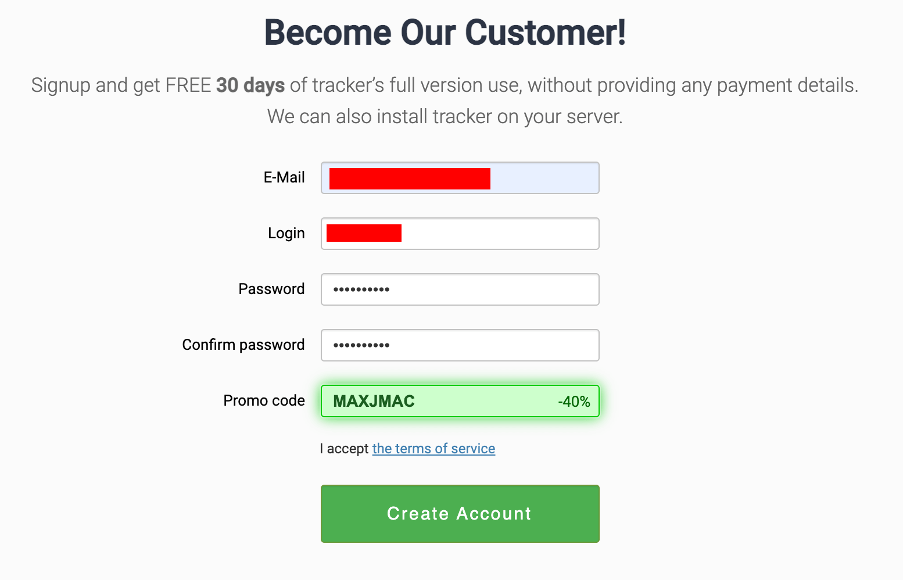
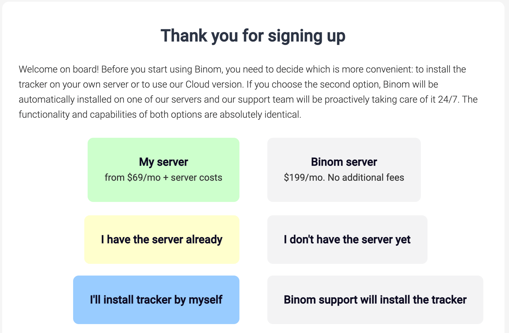
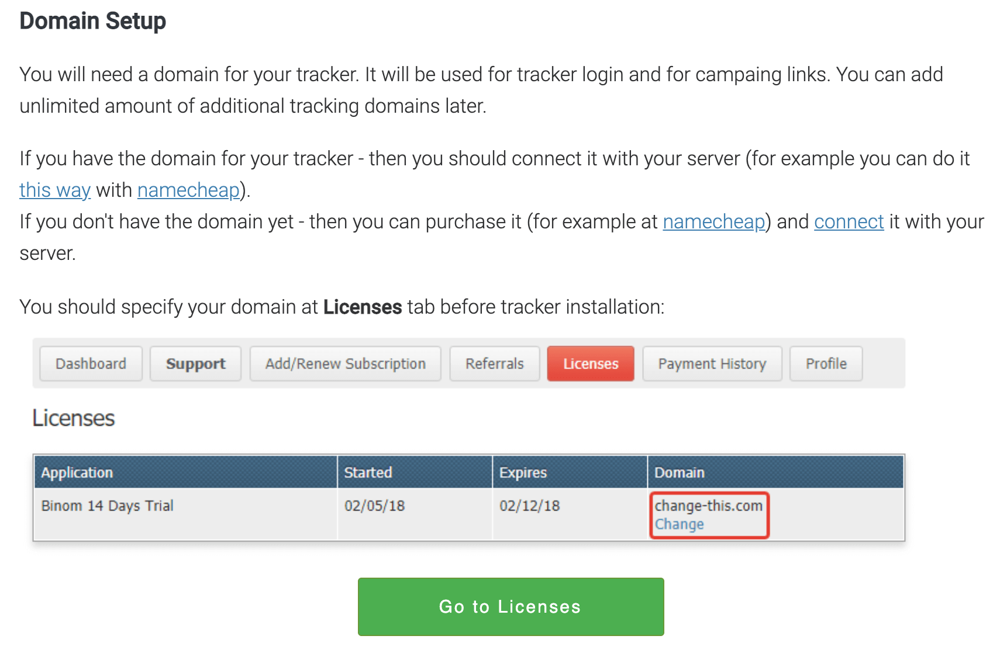
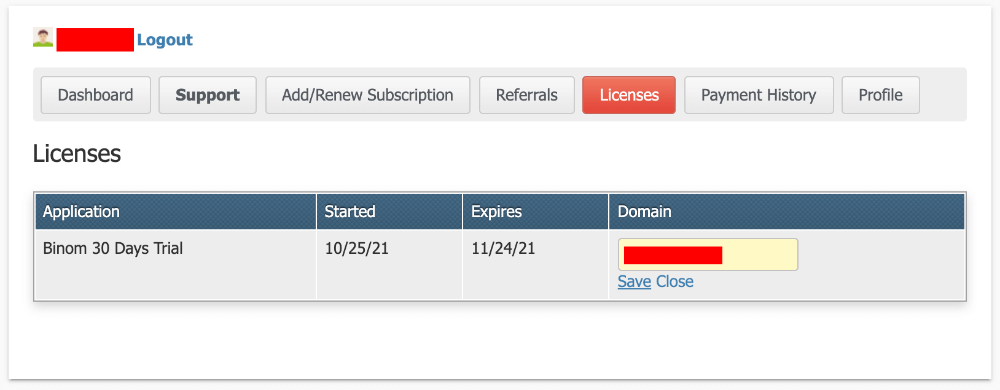
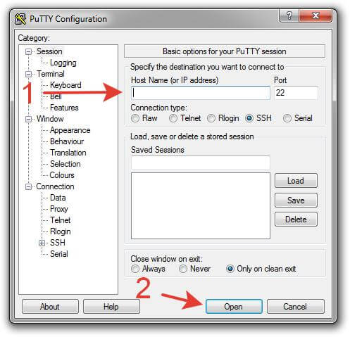

Tracker中的王者--追踪器Binom完全配置安装中文指南
优惠
-
Binom注册:https://binom.org/signup?from=MAXJMAC 使用Promo code:
MAXJMAC，首月免费，次月六折。 -
DigitalOcean注册:https://m.do.co/c/194ba0ca4bf2 送100$，有效期60天，相当于免费使用2个月。
-
Namecheap注册:https://namecheap.pxf.io/GjOgMk 购买时使用优惠码
COUPONFCNC
Binom的特点和优势
Binom是一款Self-Host的追踪器，也就是说，跟其他云追踪不同，你必须自己准备一台服务器用来安装这个追踪器。好处是你的数据都保存在你自己的服务器上，不存在像云追踪那样只给你保存几个月。
Binom是不限事件数的，也就是说不论你跑多大的量，只要你的服务器顶得住，Binom不像其他云追踪那样需要对超出的事件数额外付费。非常适合跑《不亏钱指南》 。
配置步骤
1.服务器准备
通过上方优惠链接 注册DigitalOcean后，点击右上角Create，选择Droplets，界面如图：
按Binom的官方推荐，选择Ubuntu系统，Plan选择Basic的18刀/月的即可，单日流量20万以内没问题，20万以上50万以下选24刀/月的。
数据中心地区建议选择Amsterdam或Frankfurt，这两个作为全球网络中心，跑全球流量都适用 。
认证方式选择密码，注意这里密码要求8位数以上，必须有1个大写字母且不能是第一或最后一位，必须包含1个数字，不能以数字或特殊字符结尾。
注意：密码自己保存好并记住，后面登录服务器需要用到。
点击最下方的Create Droplet按钮创建即可。
创建成功后，你会得到这个服务器的IP地址，复制下来，后面会用到。
2.Cloudflare配置
这里建议使用Cloudflare来做DNS和CDN。
Namecheap 购买好域名后，登录到Cloudflare后台，点击添加站点，输入你的域名，计划选择最下方的免费0美元的即可。

导入后删除掉所有DNS记录，然后添加一条A记录，名称填@,IPv4的地址填上面记录的服务器IP地址，点击保存并继续。

注意步骤3的两个地址，下面会用到。
进入Namecheap后台，进入域名管理页面，在NAMESERVERS处选择Custom DNS，将上方的步骤3的两个地址粘贴进来，点击右侧的勾保存。

回到Cloudflare后台点击完成，检查名称服务器。

配置建议都应用，然后点击请转到概述页面即可。
3.Binom注册
使用优惠链接https://binom.org/signup?from=MAXJMAC 注册，获得首月免费，次月六折优惠。

选择My Server，然后选择I have the server already，再选择I'll install tracker by myself。

弹出的内容是叫你将域名指向你的服务器，我们已经在上一步Cloudflare配置中完成，直接点击Go to Licenses即可。

在License页面中，将域名修改成你的域名，点击Save即可。

4.连接服务器
如果你使用的是Windows，下载安装Putty ，打开Putty，在下图箭头1处输入服务器IP地址，并在箭头2处点击“Open”按钮。

弹出窗口点击Yes即可。
输入服务器登录密码（屏幕上不会显示输入的密码），也可以使用右键复制密码后粘贴到Putty。

如果你使用的是Mac OS，使用系统内置的“终端/Terminal”程序，输入：ssh login@IP
login替换为服务器用户名，IP替换成服务器IP

输入“yes”，然后按回车键。

输入密码 (密码不会显示在屏幕上)，然后按回车键。

然后你将看到以下窗口界面：

连接上以后，你会看到欢迎界面，然后就可以开始安装了。
5.使用自动安装
这种安装方法将会在10分钟内安装所有所需软件并进行优化。但是这种方法只能安装在纯净的系统里，不能在已经安装了其他项目的服务器上使用自动安装方法。同时我也建议这个服务器只放追踪，Landing Page用另外的解决方案，这样才能保证追踪和Landing Page两者的性能。
①复制粘贴或输入
wget http://data.binom.org/binom_install.sh -O /root/binom_install.sh
回车

这一步是将自动安装脚本下载到服务器根目录
②复制粘贴或输入
bash /root/binom_install.sh install
回车

即执行安装脚本。
③你需要为追踪器输入域名，用于登录追踪器和生成Campaign链接。 注意：如果你的域名已经指向此服务器，在安装的时候会为此域名自动配置SSL，如果没有指向此服务器，则追踪器只能使用http，如果你没有准备域名，你也可以直接输入IP地址。

图示是使用IP地址的情况，实际我们使用刚才配置好的域名即可。
④输入Email地址

这里填入我们注册Binom时的E-Mail。
⑤选择时区

北京时间是GMT+8时区，所以应该输入28。
⑥自动安装完成之后，将会显示登录信息。

注意！！！一定要保存好这些登录信息，这些信息只在安装的时候生成，如果丢失将无法找回！
至此，安装配置已全部完成，我们可以使用上面登录信息里的地址打开我们的追踪器后台，使用Login（用户名）和密码进行登录即可开始使用。
总结
Binom的配置安装其实并不复杂，基本都是点点点和复制粘贴就能解决。所以不要被Self-Host吓退，配置安装完成后基本可以不用管服务器那边，像云追踪一样使用。
可能有的小伙伴会担心自己不会维护服务器，万一遇到问题很难解决。我自己的追踪自安装以来，除了一次服务器迁移，至今Uptime已经200多天了，至今未出任何问题，也从未登录服务器做任何操作，非常稳定。即使遇到问题，Binom也有强大的技术支持会帮你解决。
如果上面步骤如此详细的安装教程下你仍然无法完成配置安装，可以联系我给你远程处理（有偿）。
以上。
广告时间
我建立了一个知识星球，在这里分享一些我找到的公开资源和我的一些经验，同时希望能建立一个友好的新手交流的社群，大家共同成长，成为未来大牛。